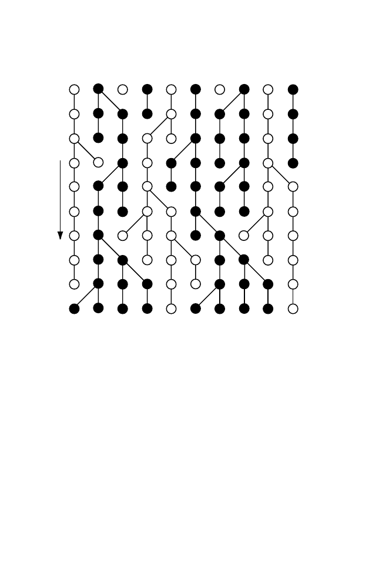

13.7 Modeling Gene Frequencies in Populations
393
0
1
2
3
4
5
6
7
8
9
Starting Population
T
ime
Present
Generations ago
Fig. 13.6.
Schematic illustration of Wright-Fisher model for a population of size
N
= 5, with two alleles (
A
= white circles,
B
= black circles) at equal starting
frequencies. Each horizontal line of 2
N
= 10 circles corresponds to a different gen-
eration. The total population size does not change from generation to generation.
Copies of each gene to be reproduced for the next generation are chosen randomly,
so that some may be copied more than once and others not at all. This leads to
ge-
netic drift
, illustrated here by the excess of
B
alleles in the present population (0
generations ago). Note that three generations ago there was an excess of
W
alleles.
–
Mating among individuals is random.
–
Allele frequencies are not perturbed by mutation, migration, or selection.
The term “random mating” deserves further explanation. To form an off-
spring, choose an individual at random from the population and then choose
one if its gametes at random. Return the chosen individual to the population,
and repeat the experiment. This results in two gametes that form an individ-
ual in the next generation. This procedure is repeated
N
times to form the
next generation. Our model, diagrammed in Fig. 13.6, describes a population
in terms of a
gene pool
from which genes are randomly drawn to constitute